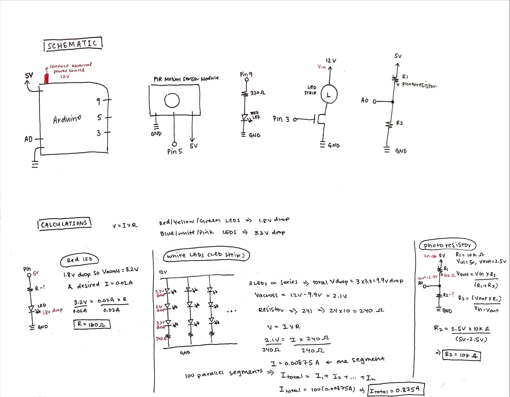
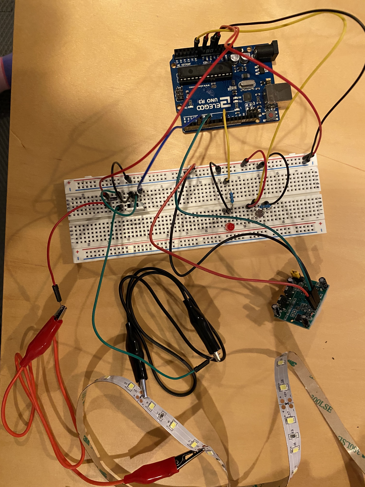
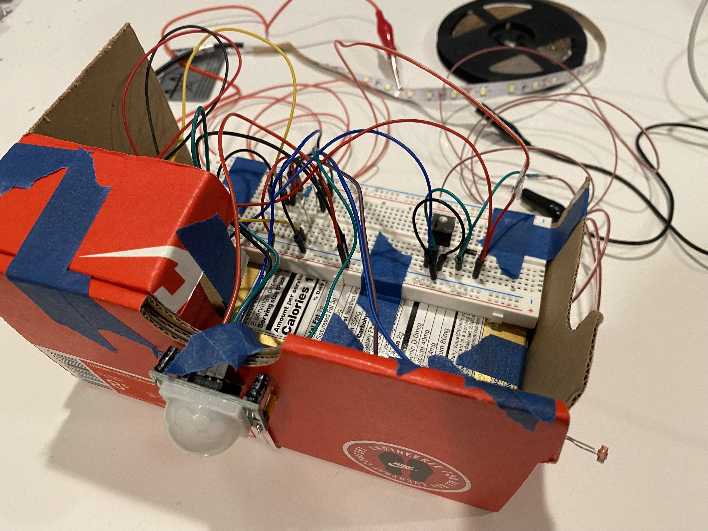
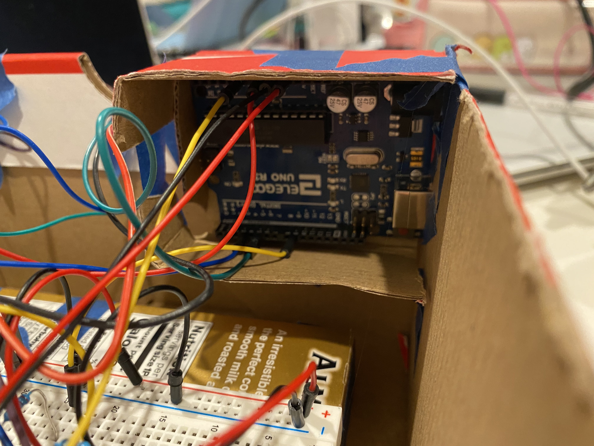
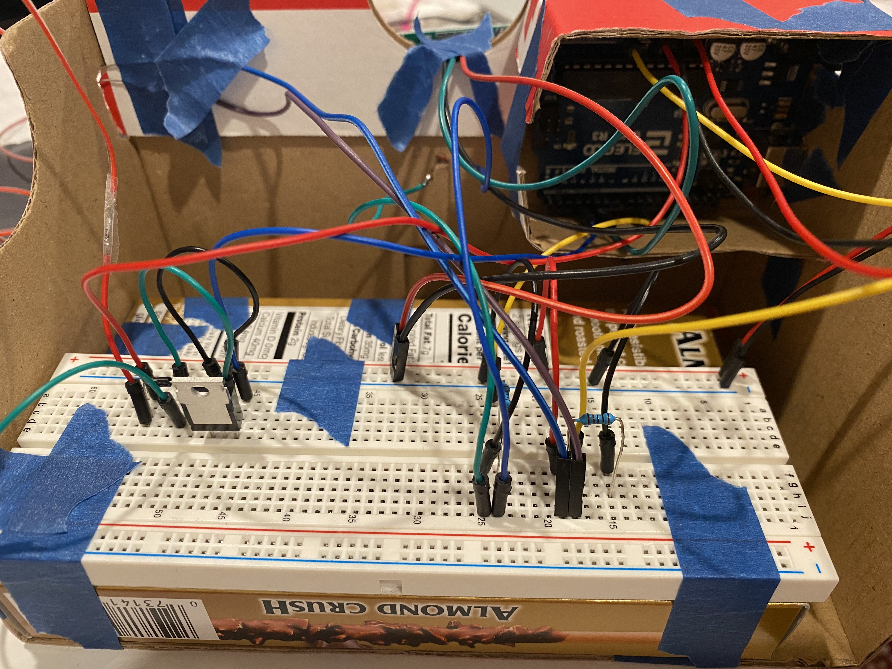
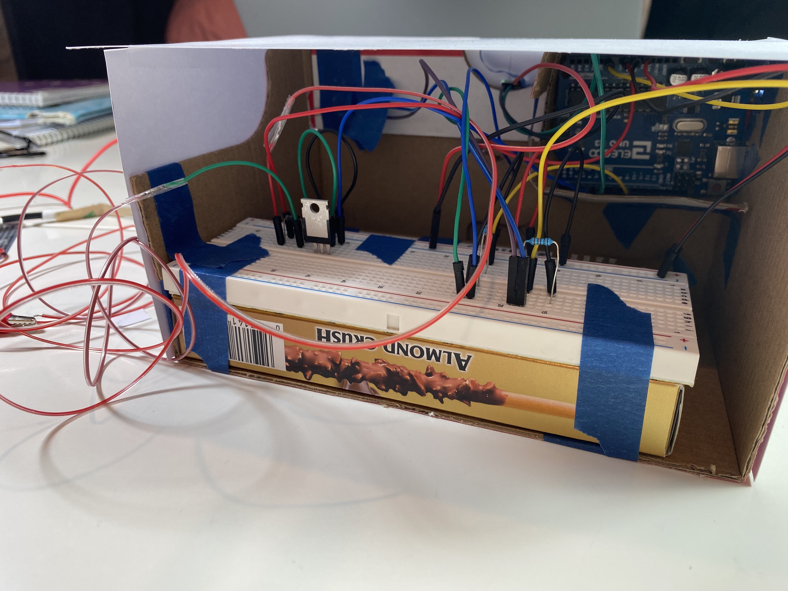
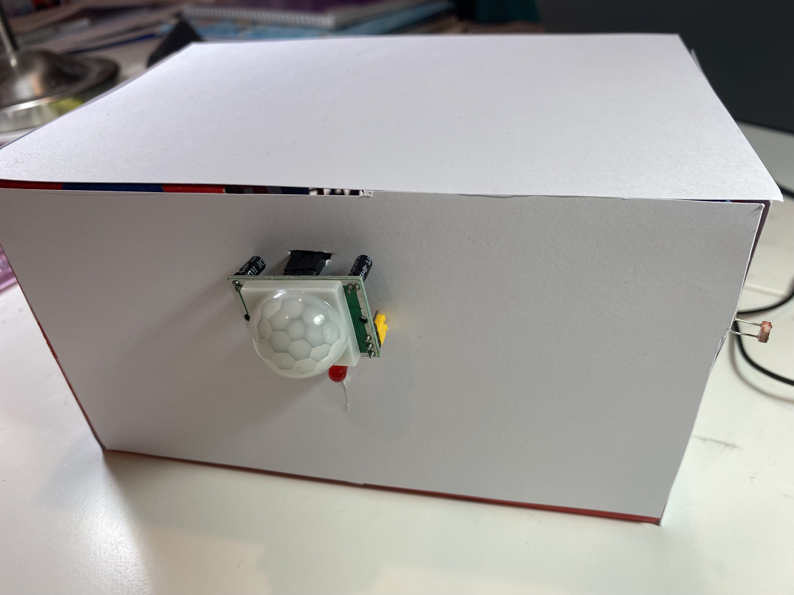
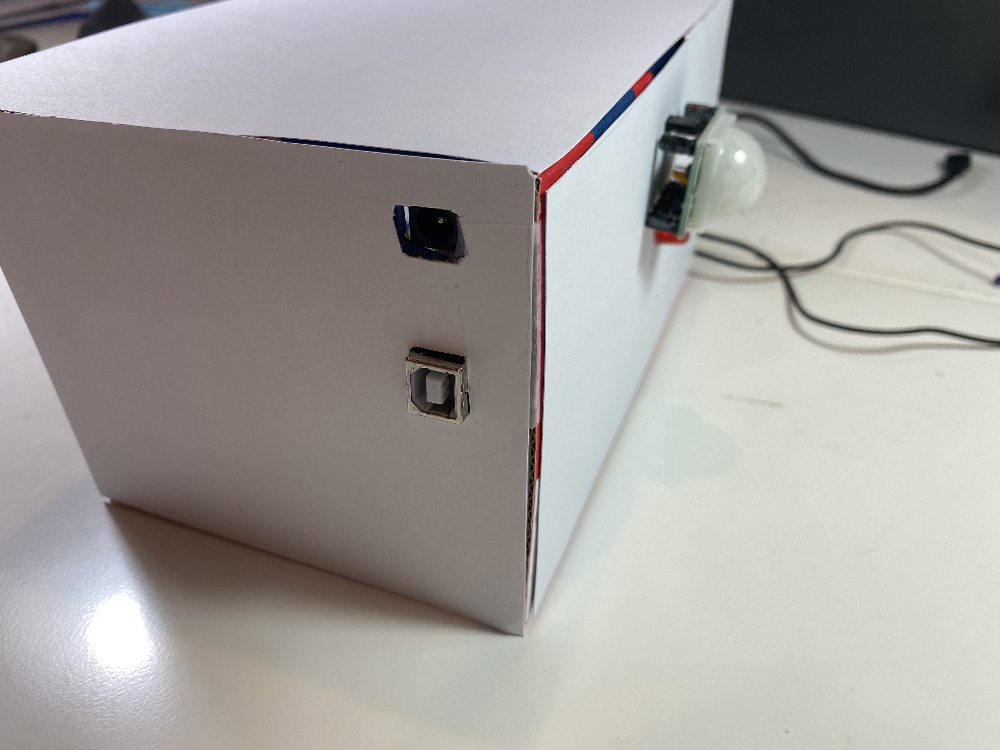
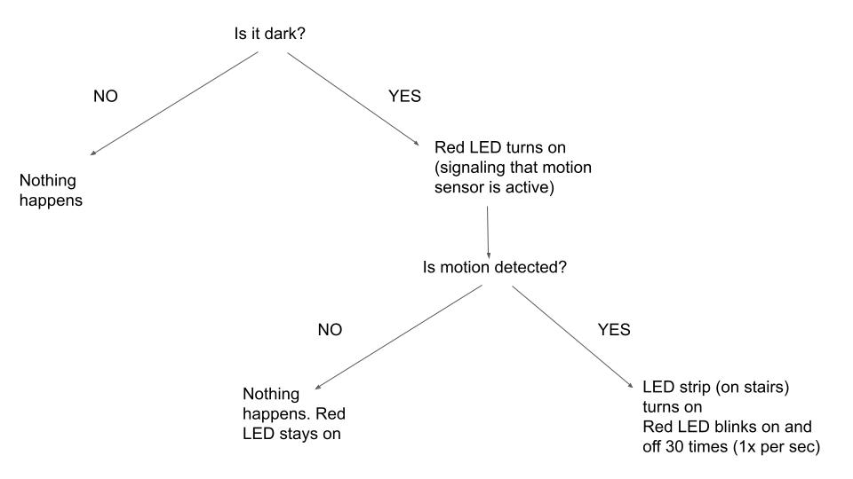

Here is all the documentation for my final project!
For this assignment, I was tasked to:
integrate the electronics skills I have learned this past quarter into a PRODUCT
the final project must:
take some input and connect that to some output through digital logic
be integrated into a prototype (so it cannot just be a breadboard on the table!)
Here is a gif of the motion activated stair light 💡 in action!
For my final project, I decided to make motion activated stair lights. I often trip on the stairs when it is dark (because I'm too lazy to try to find the light switch when it's dark), so I wanted to make lights for the stairs that turn on when it is dark and when motion is detected!
Schematic
 Schematic and calculations
for my final project.
Since I was using a red LED and the LED strip for my circuit, I calculated the appropriate
resistance to use for the red LED. And I did another set of calculations for seeing the amount of current used by the LED strip. For red, yellow,
and green LEDs, they all have 1.8V voltage drop, and for blue, pink, and white LEDs, they all have 3.3 voltage drop. The
desired current for the red LED I used was 20mA, or 0.02A (found based on the datasheets for the LEDs). When calculating the
appropriate resistance to be used in the circuit, I started with calculating the voltage across. For the red LED, I decided to round up and use a 220
Ω resistor.
Red LED:
Knowing that the Arduino gives 5V, I calculated the voltage across as 3.2V (5V - 1.8V drop = 3.2V across). Using the known voltage across and
the desired current, I then used Ohm's Law with the equation V=IR to get a value R=160Ω for resistance. To ensure
that I did not overload the LEDs and cause it to burn out, I decided to round up and use a 330Ω resistor (shown in schematic
above calculations).
-- N-MOSFET Transistor: For the transistor, I connected the LED strip to it as the high-load output device. From looking at the datasheet for the transistor, the
LED strip box, and from the class lectures, I knew that the N-MOSFET transistor has a max drain current of 32A and Vdss (drain source voltage) of 60V. For the LED strips, it
contains 300 LEDs, and the LEDs are set up so that the strip groups 3 LEDs in series in a segment, and the segments are in parallel, so there are 100 segments in the strip. The LEDs have 3.3V drop (since they are white). For series
circuits, Vtotal = V1 + V2 + V3, so the total voltage drop across one segment is 3*3.3 = 9.9V. Connecting the LED strip to 12V power supply means that there is 12-9.9=1.2Vacross.
The resistor in the segment is 240ohms. Using Ohm's Law to solve for current, I=V/R=2.1V/240ohms=0.00875A. For parallel circuits, Itotal=I1+I2+...+In. Since there are 100 segments, and each
segment has the same current, so the total current for the LED strip is 0.00875*100 = 0.875A.
-- Photoresistor: For the photoresistor, I exposed the photoresistor to different intensity brightness to measure resistance. The measured
resistance I got from the multimeter was a range of around 1k-10kΩ, and I found that resistance decreased as brightness intensity increased. I found that when
the multimeter measured around 10kΩ resistance, I measured 2.5V, and 5V when the photoresistor was exposed to really intense luminosity. For calculating R2, I
used the equation R2=(Vout*R1)/(Vin-Vout) using the values Vin=5V, Vout=2.5V, R1=10kΩ, and I calculated R2 to be 10kΩ.
Circuit
For my final project, here is my Bill of Materials:
LEDs (LED strip)
Photoresistor (for light sensing)
PIR motion sensor module (for motion sensing)
Assorted resistors (for current-limiting)
Wires
 Circuit
Project Execution
To put everything together, I decided to construct a little box to hide the breadboard, Arduino, and wires. I cut up an old shoe box and used a pocky box to put the Arduino and breadboard.
So motion could be detected, I taped the PIR motion sensor module outside the box. I also taped the photoresistor to be poking out of the box as well to detect light intensity (if it is dark or bright).
I used the red LED to show when the motion sensor was active (so the red LED turned on when it was dark).
 Box Enclosure
 Arduino nested inside the box
 Breadboard inside the box
To make my box look a little nicer, I cut out white cardstock paper to line the outsides of the box, and I left the back open to be able to easily access the Arduino and breadboard.
 Open back of box enclosure
 Front of box (PIR motion sensor and red LED in center, and photoresistor sticking out the right side)
 Plugs for Arduino to connect to power supply
Arduino Code
/* HCDE 439 Final Project!
* Jocelyn Chen
* Thursday 3.10.2022
*
* Program: Make LED strip light up along staircase if motion is detected (when it is dark).
*
*/
const int led_pin = 9; // pin for red LED (used to indicate that motion sensor is active)const int pir_pin = 5; // pin for PIR motion sensor module output pin (read HIGH or LOW)const int leds_pin = 3; // pin for LED Stripconst int pr_pin = A0; // pin for photoresistor sensor (detect if it is dark)int pir_value = 0; // status of PIR motion sensorint pr_value = 0; // status of photoresistor/// SETUP FUNCTION ///// the setup function runs once when you press reset or power the arduinovoidsetup() {
// set pin for red LED as OUTPUTpinMode(led_pin, OUTPUT);
// set pin for LED strip as OUTPUTpinMode(leds_pin, OUTPUT);
// set pin for PIR motion sensor as INPUTpinMode(pir_pin, INPUT);
// intialize LED strip as off (analog value to 0)analogWrite(leds_pin, 0);
// initialize serial communication at 9600 bits per secondSerial.begin(9600);
}
/// COUNT THIRTY FUNCTION ///// Blinks red LED on and off 30 times (as a time indicator for showing thirty seconds have passed)void countThirty() {
// integer for counting the number of secondsint num_sec = 0;
// loop 15 timesfor (int i = 0; i < 15; i++) {
// turn red LED off (set analog value to 0)analogWrite(led_pin, 0);
// wait 1 seconddelay(1000);// increment num_sec variable up by one
num_sec++;
// for debugging: print out current number of seconds to serial monitorSerial.print(num_sec);
Serial.println(" sec");
// turn red LED on (set analog value to 100)analogWrite(led_pin, 100);
// wait 1 seconddelay(1000);
// increment num_sec variable up by one
num_sec++;
// for debugging: print out current number of seconds to serial monitorSerial.print(num_sec);
Serial.println(" sec");
}
}
/// LOOP FUNCTION ///// the loop function runs over and over again forevervoidloop(){
// read the analog in value of the photoresistor
pr_value = analogRead(pr_pin);
// for debugging: print out photoresistor values to the serial monitorSerial.print("photoresistor value in: ");
Serial.println(pr_value);
// if analog in from photoresistor is less than 100 (detects that it is dark)if (pr_value < 100) {
// turn red LED on (set analog value to 100)analogWrite(led_pin, 100);
// read the digital in value of the PIR motion sensor (detect if there is motion; 1 if motion, 0 if no motion)
pir_value = digitalRead(pir_pin);
// if motion is detectedif (pir_value == HIGH) {
// turn LED strip on (set analog value to 100);analogWrite(leds_pin, 100);
// print out PIR motion sensor value to serial monitorSerial.print(pir_value);
// print out motion detected message to serial monitorSerial.println("Motion detected; turn on led!!!");
// wait 30 seconds
countThirty();
} else { // no motion detected// turn LED strip off if there is no motionanalogWrite(leds_pin, 0);
}
} else { // photoresistor value > 100 (not dark)// turn red LED off (set analog value to 0)analogWrite(led_pin, 0);
}
}
Above is a code snippet of my Arduino code. For my code, I initialized the pins for the LEDs as OUTPUTs, and the photoresistor as an INPUT.
View the arduino code
here!
 The way the stair lights are activated is through this flowchart.
First, the sensor value of the photoresistor is looked at: if the analog read value is less than 100 (it is dark), then the PIR motion sensor is activated and the
red LED is turned on (to indicate that the PIR motion sensor is active). If the analog read value is >= 100, then nothing happens (it is not dark). Then the PIR motion
sensor digital read value is looked at. If the PIR motion sensor value is HIGH, motion is detected, and the stair light (LED strip) turns on. To count how much time is left while the stair
light is on, the red LED blinks on and off 30 times, 1x per second. If the PIR motion sensor value is LOW, this means no motion is detected, and nothing changes.
Videos
Here is a gif of the motion activated stair light 💡 in action!
Motion is sensed, and LED strip turns on 💡 (recruited my sister for the video demo)
Gif of the red LED blinking on and off when motion has been detected
Demo showing the motion sensor being activated when the photoresistor reads that it is dark, turning on the LEDs on the stairs.
Motion is sensed, and LED strip turns on 💡 (recruited my sister for the video demo)
Video of the red LED blinking when motion has been detected